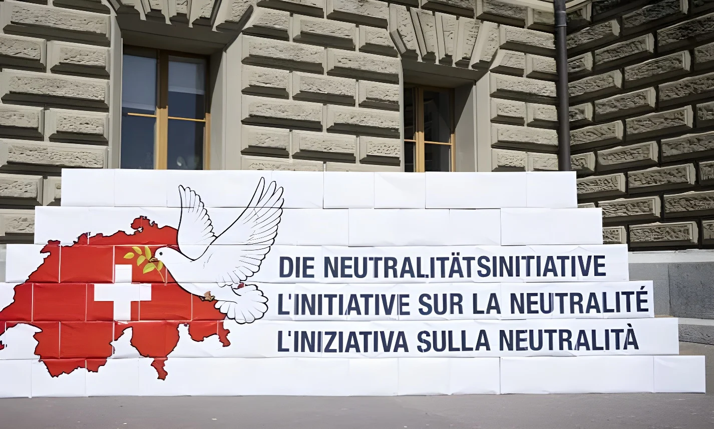

Le 27 septembre 2026, environ 70 % des votants ont rejeté l'initiative populaire « Sauvegarder la neutralité suisse ». Portée par le mouvement souverainiste Pro Schweiz et financée en grande partie par Christoph Blocher, elle voulait graver dans la Constitution une neutralité « perpétuelle et armée » et interdire à la Suisse de reprendre les sanctions de l'Union européenne, comme celles prises contre la Russie en 2022. Aucun canton ne l'a acceptée.
L'initiative « Sauvegarder la neutralité suisse », dite initiative sur la neutralité, voulait inscrire dans la Constitution fédérale non seulement le principe de la neutralité, mais aussi sa mise en pratique. La Suisse aurait été déclarée neutre de façon « perpétuelle et armée », et il lui aurait été interdit d'adhérer à une alliance militaire ou de défense, sauf en cas d'attaque directe contre son territoire.
Surtout, le texte lui aurait interdit de prendre des sanctions contre des États belligérants, sauf celles décidées par l'ONU. Concrètement, Berne n'aurait plus pu reprendre les sanctions de l'Union européenne, comme celles adoptées contre la Russie depuis février 2022.
L'initiative est née en réaction à la décision du Conseil fédéral, en 2022, de reprendre les sanctions européennes contre la Russie après l'invasion de l'Ukraine. Pour ses partisans, cette décision revenait à prendre parti dans un conflit et à abandonner la neutralité traditionnelle. La campagne du oui a été financée pour plus de 2 millions de francs par Christoph Blocher, figure historique de l'UDC, et pour 1,3 million par Pro Schweiz.
Le Conseil fédéral avait recommandé dès juin 2024 de rejeter le texte, et le Parlement avait renoncé à lui opposer un contre-projet. Leur argument : l'initiative aurait lié les mains du gouvernement et limité la coopération avec l'OTAN et les partenaires européens, alors que la sécurité du continent se dégrade.
Le congrès de Vienne reconnaît la neutralité perpétuelle de la Suisse.
Invasion de l'Ukraine par la Russie ; la Suisse reprend les sanctions de l'Union européenne.
Lancement de la récolte de signatures par Pro Schweiz.
Le Conseil fédéral recommande de rejeter l'initiative, sans contre-projet.
Signature des Bilatérales III avec l'Union européenne.
L'initiative est rejetée par environ 70 % des votants et par tous les cantons.
Le résultat est net : environ 70 % de non selon les premiers résultats officiels et les projections de l'institut gfs.bern, avec une participation de 47 %. Comme toute initiative populaire, le texte devait obtenir la double majorité du peuple et des cantons : il n'a convaincu aucun canton.
Le Tessin, canton italophone, a été le plus partagé, avec seulement 52 % de non. À l'échelle communale, l'initiative a tout de même séduit certains villages, comme Zwischbergen, en Valais, où elle a obtenu 92 % de oui.
| Partisans (oui) | Opposants (non) | |
|---|---|---|
| Neutralité | Intégrale, inscrite dans la Constitution | Souple, adaptée au contexte |
| Sanctions | Seulement celles de l'ONU | Possibilité de suivre l'UE |
| OTAN | Coopération très limitée | Coopération utile à la sécurité |
| Soutiens | Pro Schweiz, Christoph Blocher, une partie de l'UDC | Conseil fédéral, Parlement, la plupart des partis |
« Le peuple ne voulait pas inscrire la neutralité perpétuelle et armée dans la Constitution. »
— Résumé du résultat par la radio-télévision publique suisse SRF, 27 septembre 2026Ce vote ne signifie pas que les Suisses renoncent à la neutralité : celle-ci reste un pilier de leur identité et de leur politique étrangère, à la fois pour les bons offices et la médiation internationale. Mais une large majorité refuse d'en faire un carcan juridique. Depuis la guerre en Ukraine, la Suisse cherche un équilibre délicat : rester neutre militairement tout en montrant sa solidarité avec l'Europe, dont elle dépend économiquement et avec laquelle elle vient de signer les Bilatérales III. Le rejet de l'initiative conforte cette ligne pragmatique, celle d'une neutralité qui laisse au gouvernement une marge d'appréciation face à un monde plus instable.
Am 27. September 2026 haben rund 70 Prozent der Stimmenden die Volksinitiative «Wahrung der schweizerischen Neutralität» abgelehnt. Die vom souveränistischen Verein Pro Schweiz lancierte und zu einem grossen Teil von Christoph Blocher finanzierte Vorlage wollte eine «immerwährende bewaffnete» Neutralität in der Verfassung verankern und der Schweiz verbieten, Sanktionen der Europäischen Union zu übernehmen – etwa jene gegen Russland von 2022. Kein einziger Kanton hat zugestimmt.
Die Volksinitiative «Wahrung der schweizerischen Neutralität», kurz Neutralitätsinitiative, wollte nicht nur das Prinzip der Neutralität, sondern auch deren Anwendung in der Bundesverfassung festschreiben. Die Schweiz wäre «immerwährend und bewaffnet» neutral gewesen und hätte keinem Militär- oder Verteidigungsbündnis beitreten dürfen – ausser im Fall eines direkten Angriffs auf ihr Gebiet.
Vor allem hätte der Text der Schweiz verboten, Sanktionen gegen Krieg führende Staaten zu ergreifen, ausser jenen der UNO. Konkret hätte Bern keine EU-Sanktionen mehr übernehmen können, wie jene gegen Russland seit Februar 2022.
Die Initiative entstand als Reaktion auf den Entscheid des Bundesrats von 2022, die EU-Sanktionen gegen Russland nach dem Einmarsch in die Ukraine zu übernehmen. Für die Befürworter bedeutete dies, in einem Konflikt Partei zu ergreifen und die traditionelle Neutralität aufzugeben. Die Ja-Kampagne wurde mit über zwei Millionen Franken von Christoph Blocher, einer historischen Figur der SVP, und mit 1,3 Millionen Franken von Pro Schweiz finanziert.
Der Bundesrat hatte bereits im Juni 2024 die Ablehnung empfohlen, und das Parlament verzichtete auf einen Gegenvorschlag. Ihr Argument: Die Initiative hätte der Regierung die Hände gebunden und die Zusammenarbeit mit der NATO und den europäischen Partnern eingeschränkt – in einer Zeit, in der sich die Sicherheitslage in Europa verschlechtert.
Der Wiener Kongress anerkennt die immerwährende Neutralität der Schweiz.
Russland marschiert in die Ukraine ein; die Schweiz übernimmt die EU-Sanktionen.
Pro Schweiz beginnt mit der Unterschriftensammlung.
Der Bundesrat empfiehlt die Ablehnung der Initiative ohne Gegenvorschlag.
Unterzeichnung der Bilateralen III mit der Europäischen Union.
Die Initiative wird von rund 70 Prozent der Stimmenden und von allen Kantonen abgelehnt.
Das Ergebnis ist klar: rund 70 Prozent Nein gemäss den ersten amtlichen Resultaten und den Hochrechnungen von gfs.bern, bei einer Stimmbeteiligung von 47 Prozent. Wie jede Volksinitiative brauchte die Vorlage das doppelte Mehr von Volk und Ständen: Sie überzeugte keinen einzigen Kanton.
Am knappsten war das Resultat im italienischsprachigen Tessin, das nur mit 52 Prozent Nein stimmte. Auf Gemeindeebene fand die Initiative dennoch Anklang, etwa in Zwischbergen im Wallis mit 92 Prozent Ja.
| Befürworter (Ja) | Gegner (Nein) | |
|---|---|---|
| Neutralität | Integral, in der Verfassung verankert | Flexibel, der Lage angepasst |
| Sanktionen | Nur jene der UNO | EU-Sanktionen weiterhin möglich |
| NATO | Sehr begrenzte Zusammenarbeit | Zusammenarbeit dient der Sicherheit |
| Unterstützung | Pro Schweiz, Christoph Blocher, Teile der SVP | Bundesrat, Parlament, die meisten Parteien |
«Das Stimmvolk wollte die immerwährende bewaffnete Neutralität nicht in der Verfassung verankern.»
— Zusammenfassung des Resultats durch SRF, 27. September 2026Dieses Nein bedeutet nicht, dass die Schweizerinnen und Schweizer auf die Neutralität verzichten: Sie bleibt ein Pfeiler ihrer Identität und ihrer Aussenpolitik, etwa für die Guten Dienste und die internationale Vermittlung. Eine grosse Mehrheit will daraus aber kein rechtliches Korsett machen. Seit dem Krieg in der Ukraine sucht die Schweiz ein heikles Gleichgewicht: militärisch neutral bleiben und zugleich Solidarität mit Europa zeigen, von dem sie wirtschaftlich abhängt und mit dem sie soeben die Bilateralen III unterzeichnet hat. Die Ablehnung der Initiative stärkt diese pragmatische Linie: eine Neutralität, die der Regierung in einer unsichereren Welt Handlungsspielraum lässt.